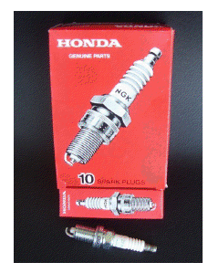

Honda Accord 2008 (08) 2.0; 1997CC SOHC 16V INJ - 010

Ignition Coil:
An ignition coil (also called a spark coil) is an induction coil in an automobile's ignition system spark in the spark plugs to ignite the fuel. Some coils have an internal resistor while others rely on a resistor wire or an external resistor to limit the current flowing into the coil from the car's 12 volt supply. The distributor
PRICE: £ 93
Part Number: ADH21479C
Manufacturer: Honda OEM

Spark Plugs:
A spark plug is a device for delivering electric current from anignition system to the combustion chamber containing combustion pressure within the engine. A spark plug has a metal threaded shell, electrically isolated from a central electrode by aporcelain insulator. The central electrode, which may contain a The spark plug's metal shell is screwed into the engine's cylinder head and thus electrically grounded. The central electrode protrudes through the porcelain insulator into the combustion chamber, forming one or more spark gaps between the inner end of the central electrode and usually one or more protuberances or structures attached to the inner end of the threaded shell and designated the "side", "earth", or "ground" electrode(s)
Price: £ 22
Part Number: 9807B5617P
Manufacturer: Honda
Fan Belts:
A can lead to decreased performance or complete stalling. It connects the engine cooling fan to the alternator compressor, the power steering pump and the water pump.
Price: £20.70
Part Number:
Manufacturer: Continental
Engine Sensor:
The manifold absolute pressure sensor (MAP sensor) is one of the sensors used in an internal combustion engine's electronic control system.
Engines that use a MAP sensor are typically fuel injected. The manifold absolute pressure sensor provides instantaneous manifold pressure information to the engine's electronic control unit (ECU). The data is used to calculate air density and determine the engine's air mass flow rate, which in turn determines the required fuel metering for optimum combustion (see stoichiometry) and influence the advance or retard of ignition timing. A fuel-injected engine may alternately use a mass airflow sensor seldom both.
Price: £ 102
Part Number: SEB1529.LUC
Manufacturer: Lucas

Headlight Bulbs:
Bulbs are paramount to safe driving in poor weather conditions and at night. They not only illuminate the or reverse, and when you are braking.
Price: £ 16
Part Number: 48177031P
Manufacturer: Philips